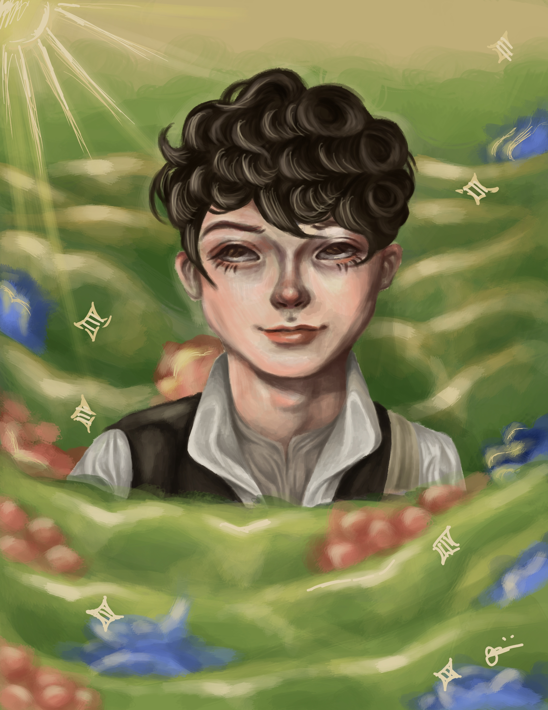

in this website, we have everything you need for your art projects!
Explore:
This piece was made by me to show how the standards of society contain us in a platform in which they can just beat up and make fun of people who are different from their normal perceptions and bully them with no sense of remorse, the person is behind the tv because they are hiding and they want to break free from the constraints of society and their unrealistic standards.
Sometimes we just need to take a breather once in a while and we need to step back to appreciate the whole picture we've been painting, no matter the flaws of our art, we will learn to love the little mistakes because that is what makes them unique and unlike anything else. When making art we need to take our time, dont rush it, because art flows with our ideas and perceptions.

This artwork was based off of my favourite show on netflix, "Anne with an E". It is a show about breaking the unhealthy and toxic philosophies that society has constructed and thinking of the people who may be affected by these factors that society has pre-determined. We can see in this artwork that 'Gilbert Blythe' one of the main protagonists in anne with an e, is sitting in the middle of a field, admiring the scenery.
In art, we can express many things, our emotions, our thoughts, our deepest desires. Art has no limitations, art can be represented through painting, sculpting, or simply just making a small doodle, it is up to the beholder to interpret their own ideas in their artworks.
In this digital art piece that I made, I drew a menacing looking statue on the ocean floor. 'What does this artwork represent?', you might ask, well, this represents what I think would be the manifestation of the unidentified beings beneath the sea, they are intriguing yet very mysterious.
Vagueness in art helps with how many interpretations we can make out of it, keeping at artwork vague has its pros and cons. It may sometimes lead to the confusion of some people, yet sometimes it may be interpreted as a plethora of beautiful and deep philosophies and ideas, it really depends on the person observing.